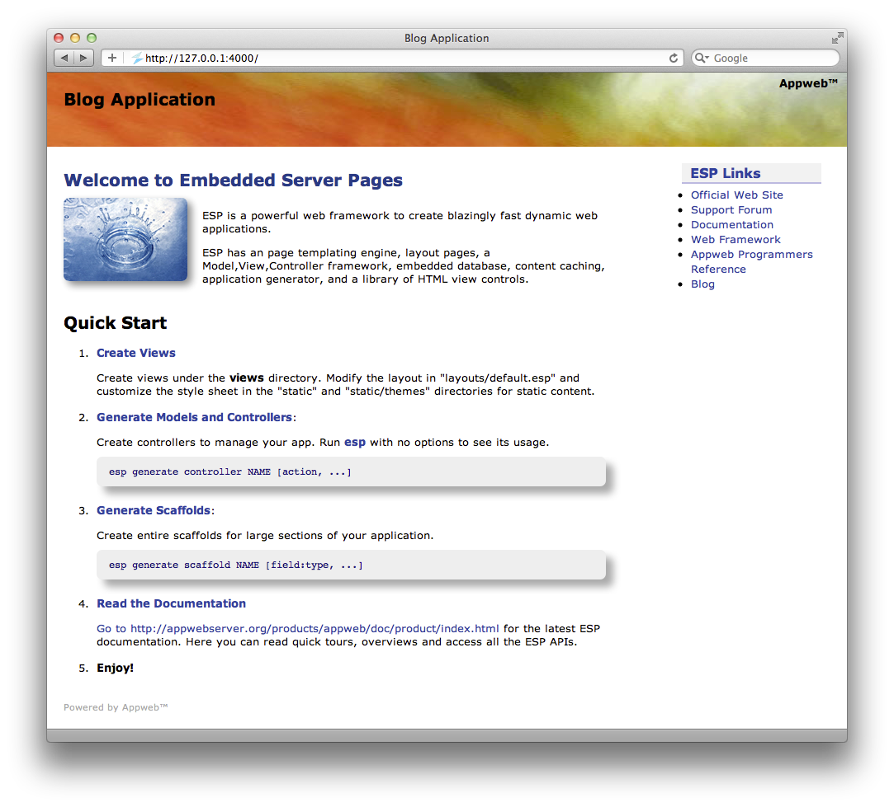
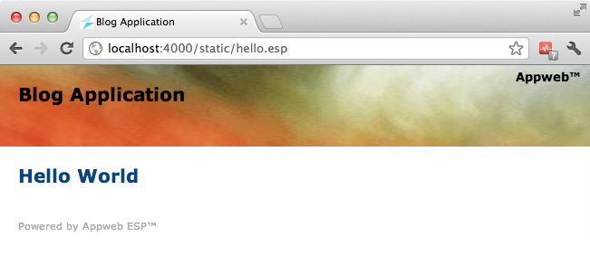
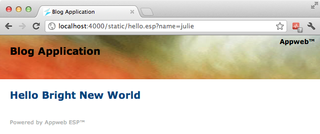
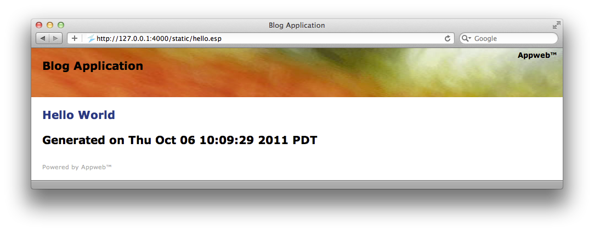
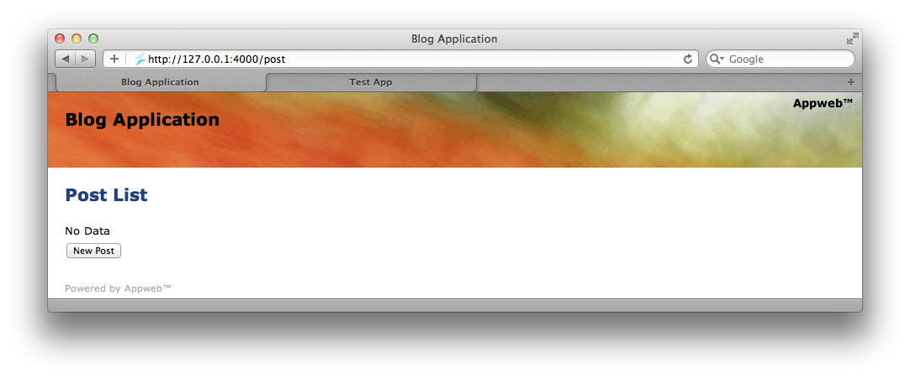
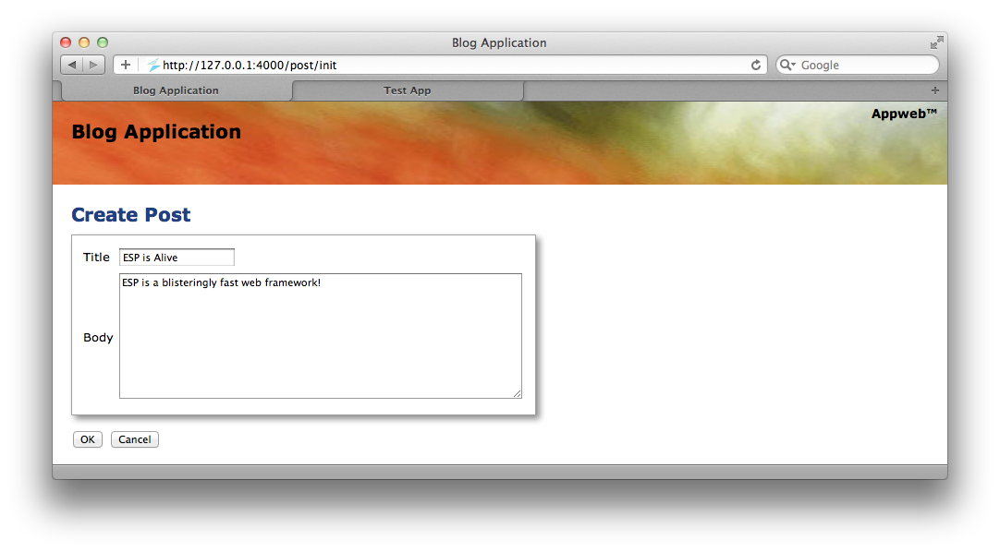
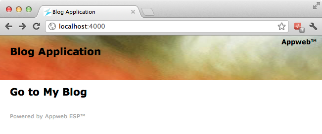
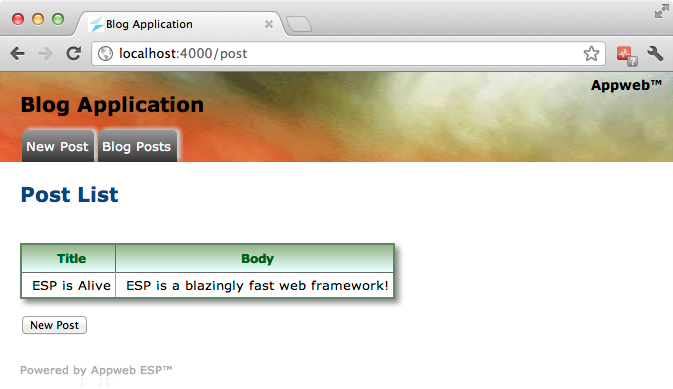

Quick Nav
See Also
ESP MVC Tour
This quick tour of the ESP MVC Framework provides an overview of the ESP Model-View-Controller framework and how to use it for your web applications.
First make sure you have read the Quick Start, and ESP Tour and that you have ESP installed on your system so you can type along as you go. This tour uses the esp application generator.
Creating a New Application
To create a new ESP application, you will use esp, the ESP application generator program. Type the following esp command in a command terminal window:
home> esp generate app blog
[CREATE] Directory: blog
[CREATE] Directory: blog/cache
[CREATE] Directory: blog/controllers
[CREATE] Directory: blog/db
[CREATE] Directory: blog/layouts
[CREATE] Directory: blog/static
[CREATE] Directory: blog/static/images
[CREATE] Directory: blog/static/js
[CREATE] Directory: blog/static/themes
[CREATE] Directory: blog/views
[CREATE] File: blog/layouts/default.esp
[CREATE] File: blog/static/images/banner.jpg
[CREATE] File: blog/static/images/favicon.ico
[CREATE] File: blog/static/images/splash.jpg
[CREATE] File: blog/static/index.esp
[CREATE] File: blog/static/js/jquery.esp.js
[CREATE] File: blog/static/js/jquery.js
[CREATE] File: blog/static/js/jquery.tablesorter.js
[CREATE] File: blog/static/layout.css
[CREATE] File: blog/static/themes/default.css
[CREATE] File: blog/appweb.conf
[CREATE] Database: blog/db/blog.mdb
[TASK] Complete
This simple command accomplished quite a bit. It first created a new directory called blog for the application, and then created subdirectories for various parts of the application. Initially, some of these directories are empty, but they will be used as your application grows.
The command also created an appweb.conf configuration file to allow you to run appweb for your application. The appweb.conf configuration file is the place where you can define your database name, and other configuration settings. The ESP web framework follows the "convention over configuration" philosophy popularized by Ruby on Rails. This means that ESP adopts certain conventions about where files and directories should be placed and about how names are used. If you work with these conventions, then you need to do little or no configuration. Things will just work.
Here are the most important directories:
| Name | Description |
|---|---|
| cache | Cached controller and view modules |
| controllers | Application controller code |
| db | Database file and database initialization scripts |
| layouts | Page layout templates |
| static | Static web pages |
| views | View web pages |
See the "esp" command documentation for an explanation of the other generated directories.
Running your Application
You can immediately run your application after generation. The esp command will invoke appweb to run your application:
home> cd blog
home/blog> esp run
[RUN] appweb -v
appweb: 2: Configuration for Embedthis Appweb
appweb: 2: ---------------------------------------------
appweb: 2: Host: magnetar.local
appweb: 2: CPU: x86_64
appweb: 2: OS: MACOSX
appweb: 2: Distribution: Apple 10.7.1
appweb: 2: Version: 4.0.0-B0
appweb: 2: BuildType: DEBUG
appweb: 2: ---------------------------------------------
appweb: 2: Config File /private/tmp/blog/appweb.conf
appweb: 2: Upload directory: /tmp
appweb: 2: Set connector "netConnector"
appweb: 2: Add handler "fileHandler" on host "default" for extensions:
html git jpeg jpg png pdf ico css js ""
appweb: 2: Activating module (Loadable) espHandler
appweb: 2: Add handler "espHandler" on host "default" for extensions: *.esp
appweb: 2: Add handler "espHandler" on host "default" for route: ""
appweb: 2: Configured host ":4000" at "."
appweb: 1: Started HTTP service on "*:4000"
appweb: 1: HTTP services Started at Wed Oct 05 18:08:45 2011 PDT
appweb: 1: Starting host named: "127.0.0.1:4000"
Then enter localhost:4000 in your browser. You should see your first application home page.
Hello World
The next step is to create a simple "Hello World" web page. ESP web pages have an .esp extension. Create a file called hello.esp under the static directory with the following content:
<%@ layout ""%> <html> <body> <h1>Hello World</h1> </body>
Don't worry about the layout directive for now, that tells ESP not to use a layout page.
To view the "Hello" web page in your browser, type in the following url: http://localhost:4000/static/hello.esp.
Layouts
The ESP templating engine can apply a layout page to allow each page so that it inherits its layout and look and feel from a master layout page. The ESP layout directive allows you to control what layout page (if any) is used. In the previous example, we set the layout page to "" which means — "don't use a layout page". If we remove that directive, the page will use the default layout. In this case we remove the html and body elements as well as the layout page has been defined with those. The new page now has a single line.
<h1>Hello Bright World</h1>
And the web page now looks like this in your browser: 
Dynamic Content
While that was fun, the output is static and boring, so let's add some dynamic content. You can embed "C" language code and ESP function calls by including them inside a special ESP web page directive that will be executed and converted to HTML before being sent to the client. There are a variety of server-side ESP web page directives, the one you'll use first is: <%= expression %>.
To add the current date and time, modify the hello.esp web page and add the highlighted line:
<h1>Hello Bright World</h1> <h2>Generated on <%= mprGetDate(0); %></h2>
Now when you re-run the page, it will display the current date and time:
No Restart Require
Notice that you did not have to restart the web server, nor did you have to manually recompile the application. Rather, ESP transparently recompiled the web page in the background. ESP noticed that the hello.esp web page has been modified and it re-parsed and compiled it into a loadable module, ready for execution.
You can also embed more complex ESP into our page, like:
<h3><% render("Request method is %s", getMethod()); %></h3>
<%
int i;
for (int i = 0; i < 10; i++) {
render(" Line: %d</br>\r\n", i);
}
%>
By using the ESP statement directive <% code %>, you can embed arbitrary "C" language statements in your web page. The render function allows you to write arbitrary data which is patched back where the directive was defined in the page. See the Views and Layouts document for full details about all the ESP web page directives.
Scaffolds
Scaffolding is a quick way to generate pieces of your application. The esp command can generate database tables, views and controllers for you. The command below will create a "post" database table with a blog post title and post comment body. The "title" is a string data type and the "body" is a multi-line text field.
home/blog> esp generate scaffold post title:string body:text
[CREATE] /private/tmp/blog/controllers/post.c
[CREATE] /private/tmp/blog/views/post-list.c
[CREATE] /private/tmp/blog/views/post-edit.c
[UPDATE] Database schema
[TASK] Complete
This command created a database table called "post" and a post controller with post-list and post-edit views.
Now if you set your browser to the URI for the post controller, you will see your post listing screen. 
Create New Posts
The new post button directs your browser to the /post/init URI. Behind the scenes, Appweb parses this URI and and selects the appropriate request route and handler for the request. It then identifies "post" as the name of the controler and "init" as the name of an action to invoke. The controller file controllers/post.c defines the controller action to respond to this request.
The controller file defines functions called actions, that are bound to URIs of the same name. Actions are defined using the espDefineAction API in the initialization function of the controller. When a request comes for a given action, the corresponding action method is invoked.
A minimal controller file looks like this:
#include "esp.h"
static void hello() {
render("Hello World\n");
}
ESP_EXPORT int esp_controller_NAME(EspRoute *eroute, MprModule *module)
{
espDefineAction(eroute, "hello", hello);
return 0;
}
Actions
The job of the action is to respond to the request and generate the response via views for the client. Here is the create action.
static void create() {
if (writeRec(createRec("post", params()))) {
inform("New post created");
redirect("@");
} else {
renderView("post-edit");
}
}
The create action above creates a new post record based on the request parameters and then uses the views/post-edit.esp view to render a response to the client. ESP edit scaffolds handle the work of both edit and create views because they are so similar.
If an action does not call any of the render methods (as the list action does not), ESP will automatically invoke a view of the same name. In the case of the list action, the views/post-list.esp will be used to generate the response.
Click OK to add the new blog post.
Edit the Home Page
You can edit the application's home page to add a link to your post listing page. Change web/index.esp to contain just the following:
<%@ layout "default" %>
<h2><% label("Go to My Blog", "@post/") %></h2>
The @post/ link means redirect to the post controller if the label is clicked.
Reload the page and you will see: Code Errors
What happens if you make a mistake entering the embedded "C" code in an ESP page. Say you forgot the semicolon in the last example. You will see an error like this in your browser:

You can suppress these errors by setting EspShowErrors to off in the appweb.conf configuration file.
Changing the Layout
You may wish to add some tabs to navigate your blog app. ESP provides a layout template engine that is used by all views to provide a common look and feel to your application. View pages leverage templates so they don't need to repeat page elements that are common across the application. Edit the layout template file layouts/default.esp and change it to use the tabs view control.
<div class="top">
<h1><a href="@@appUrl/">Blog Application</a></h1>
<% tabs(makeRec("{ \
'Blog Posts': '~/post', \
'New Post': '~/post/create', \
}", 0); %>
</div>
This will create two tab buttons to navigate your application.
After modifying the layout, you will need to re-compile the cached web pages. Normally, ESP transparently compiles the web pages whenever you modify a web page. However, if you change a layout, you may need to recompile the app. This is easy to do via the esp command.
esp compile
Validations
ESP provides flexible validation methods to help ensure the data you save is correct.
You can add calls to validate record data before it is saved to the database. To do this, edit the controllers/post.c file and add calls to ediAddValidation.
ESP_EXPORT int esp_controller_post(EspRoute *eroute, MprModule *module)
{
Edi *edi;
/* Existing code */
edi = getDatabase();
ediAddValidation(edi, "present", "post", "title", 0);
ediAddValidation(edi, "present", "post", "body", 0);
ediAddValidation(edi, "unique", "post", "title", 0);
return 0;
}
This will cause the database to automatically validate that the title and body fields are not blank and that the title is unique in the database.
If you click OK in the Post edit web page without entering any data you will see the following:

This automatically identified the input fields in error and generated a summary of the errors above the form. Of course, this default error highlighting behavior can be overridden if desired by modifying the application style sheets.
Other validation types include: checkNumber, checkBoolean, checkDate and checkFormat. You can also define new validation types by calling ejsDefineValidation.
Learn More ...
That concludes the a quick tour through some of the capabilities of the ESP web framework.
To learn more, please read:
You may also like to ask questions at the ESP Support Forum.